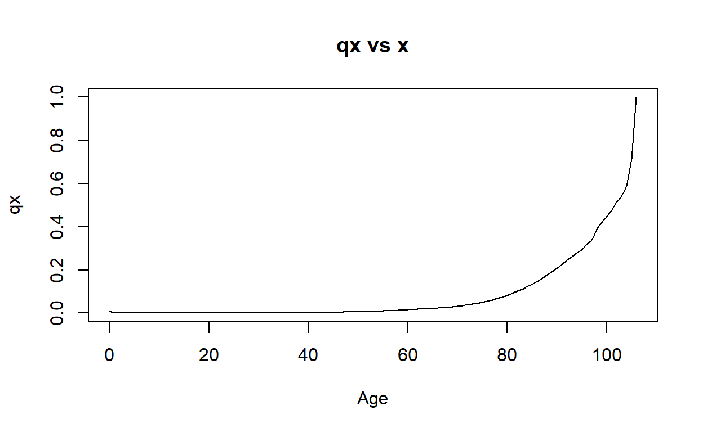

In this tutorial we aim to discuss the implementation of life table computations using the package lifecontingencies (Spedicato 2013).
The lifecontingencies package is the main R package available for performing standard financial and actuarial mathematics calculations. In this tutorial we focus only on the use of this package for performing life table calculations. If you are interested in the wider use of this package please refer to Chapter 7 of the book by Charpentier (2014).
Note that the lifecontingencies package has been loaded in the current R workspace. Therefore you can utilise the capacities of the package without explicitly loading it. However, if you are using the package outside this tutorial remember to first install the package with the code:
install.packages("lifecontingencies", dependencies = TRUE)And then load it with the instruction
library("lifecontingencies")In lifecontingencies there are several approaches for creating a life table. The first one is by inputting directly the \(l_x\).
For example, if we consider \(l_0 = 120, l_1 = 119, l_2 = 118, \ldots, l_{120} = 0\), we can create a life table with the following steps:
## create a life table
x <- 0:120 # create a vector X of ages, that is, integers from 0 to 120
lx <- 120:0 # create lx, that is, a vector from 120 to 0
names(lx) <- x #name each element of lx by using x
# create a life table LT1 by using the new function,
# which generates a lifetableclass object in R
LT1 <- new("lifetable", x = x, lx = lx, name="Sample life table 1")We can use the plot function to create a plot of \(l_x\) with the following code:
# plot LT1 by using the plot() function
plot(LT1, type="l")Or alternatively:
# plot LT1 by using the plot() function with specifications
plot(LT1@x,LT1@lx, lwd = 2, col = "red", type = "l", xlab = "Age", ylab = "lx", main = "lx vs x")In the previous code, note the use of @ to access the ages in the life table (LT1@x) and the corresponding \(l_x\) (LT1@lx).
Having created a life table we can easily compute survival probabilities and death probabilities with functions pxt, qxt.
For example, one can find the value for the survival probability, \({}_2p_{50}\), by using the following codes:
# by using lx directly
lx["52"]/lx["50"]## 52
## 0.9714286# by using the pxt function
pxt(LT1,x = 50, t = 2) ## [1] 0.9714286Similarly, one can find out the value for the death probability, \(_{10}q_{75}\), by using the following codes:
# by using lx
1 - lx["85"]/lx["75"]## 85
## 0.2222222# by using the qxt function
qxt(LT1,x = 75, t = 10)## [1] 0.2222222We can also compute life expectancies with the function exn.
For example, the complete life expectancy at birth, \(\mathring{e}_0\), and the curtate life expectancy at birth, \(e_0\) implied by the LT1 life table are:
# complete life expectancy at birth
exn(LT1, x = 0, type = "complete")## 0
## 60# curtate life expectancy at birth
exn(LT1, x = 0, type = "curtate")## [1] 59.5Based on the life table LT1 compute the value of:
x <- 0:120
lx <- 120:0
names(lx) <- x
LT1 <- new("lifetable", x = x, lx = lx, name="Sample life table 1")lx["51"]/lx["50"]lifecontingencies package# Note that this is a one-year survival probability,
# hence one can use the pxt function.
#The solution is shown in the next hintpxt(LT1,x = 50, t = 1)An alternative way for creating a life table is from one year death/survival probabilities using the convenient function probs2lifetable. To illustrate this, consider the data on one-year death probabilities from the French population in the file “FrenchTable.csv” available in the course website. We can create a life table as follows:
# Read the csv file
FTqx <- read.csv("FrenchTable.csv")
# Read the first few lines of the file
head(FTqx)# Display the ages
FTqx$Age## [1] 0 1 2 3 4 5 6 7 8 9 10 11 12 13 14 15 16 17
## [19] 18 19 20 21 22 23 24 25 26 27 28 29 30 31 32 33 34 35
## [37] 36 37 38 39 40 41 42 43 44 45 46 47 48 49 50 51 52 53
## [55] 54 55 56 57 58 59 60 61 62 63 64 65 66 67 68 69 70 71
## [73] 72 73 74 75 76 77 78 79 80 81 82 83 84 85 86 87 88 89
## [91] 90 91 92 93 94 95 96 97 98 99 100 101 102 103 104 105 106# Create the life table
FLT <- probs2lifetable(probs = FTqx$qx, type = "qx", radix = 100000, name = "French LT")
# Create a summary of the life table
summary(FLT)## This is lifetable: French LT
## Omega age is: 106
## Expected curtated lifetime at birth is: 72.01518The read.csv function permits the reading of Excel data in csv format. Note that the variable FTqx is a dataframe which is a data type similar in spirit to a database (named columns, distinct type). Columns in a dataframe can be accessed with the $ symbol (e.g. FTqx$Age).
We can plot several quantities from the French life table:
# plot the life table
plot(FLT, type="l")# Plot of q_x vs x
plot(FTqx$Age, FTqx$qx, type = "l", xlab="Age",ylab="qx", main = "qx vs x")
# Plot of log(q_x) vs x
plot(FTqx$Age, log(FTqx$qx), type = "l", xlab="Age",ylab="log(qx)", main = "log(qx) vs x")# Plot of d_x vs x
dxt(FLT, 0)## [1] 871dx <- function(x) dxt(FLT, x)
dx_vec <- Vectorize(dx)
plot(FLT@x,dx_vec(FLT@x),type="l",xlab="Age",ylab="dx", main = "dx vs x")In the above code we note the use of the function Vectorize which enables the vectorisation of scalar functions.
Use the French life table FLT to answer the following questions.
FTqx <- read.csv("FrenchTable.csv")
FLT <- probs2lifetable(probs = FTqx$qx, type = "qx", radix = 100000, name = "French LT")# you need to compute the multiplication of two probabilities# The probabilities you need is the probability of surviving from age 60
#to age 65, and then dying from between ages 65 and 75.
## The solution is included in the next hint pagepxt(FLT, x = 60, t = 5) * qxt(FLT, x = 65, t = 5) # you can use the exn function to compute the life expectancies
## The solutions are included in the next hint pageexn(FLT, 65, type = "complete")
exn(FLT, 65, type = "complete") + 65
exn(FLT, 0, type = "complete")The lifecontingencies package allows the evaluation of survival probabilities at fractional intervals, using different kinds of interpolation approaches.
For example, using the French Life Table FLT we can calculate \({}_{0.6}p_{80}\) under:
pxt(FLT, x = 80, t = 0.6, fractional = "linear") ## [1] 0.9505597pxt(FLT, x = 80, t = 0.6, fractional = "constant force") ## [1] 0.9497119pxt(FLT, x = 80, t = 0.6, fractional = "hyperbolic") ## [1] 0.9488746Using the French Life Table, FLT, calculate \({}_{0.4}q_{80}\) under the Balducci assumption.
# note that you should use the qxt function
# while specify the argument fractional as "hyperbolic"
## The solutions are included in the next page.qxt(FLT, x = 80, t = 0.4, fractional = "hyperbolic")